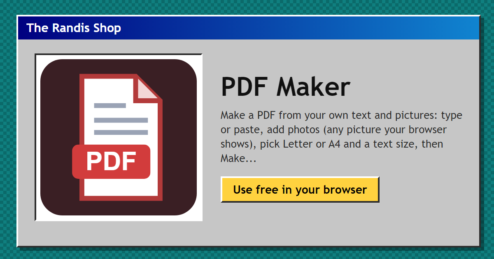

PDF Maker

Make a PDF from your own text and pictures: type or paste, add photos (any picture your browser shows), pick Letter or A4 and a text size, then Make PDF saves it to your downloads. Works with no internet; nothing leaves your computer.
Made with Randis UDS, a free desktop app that builds the tools you describe.